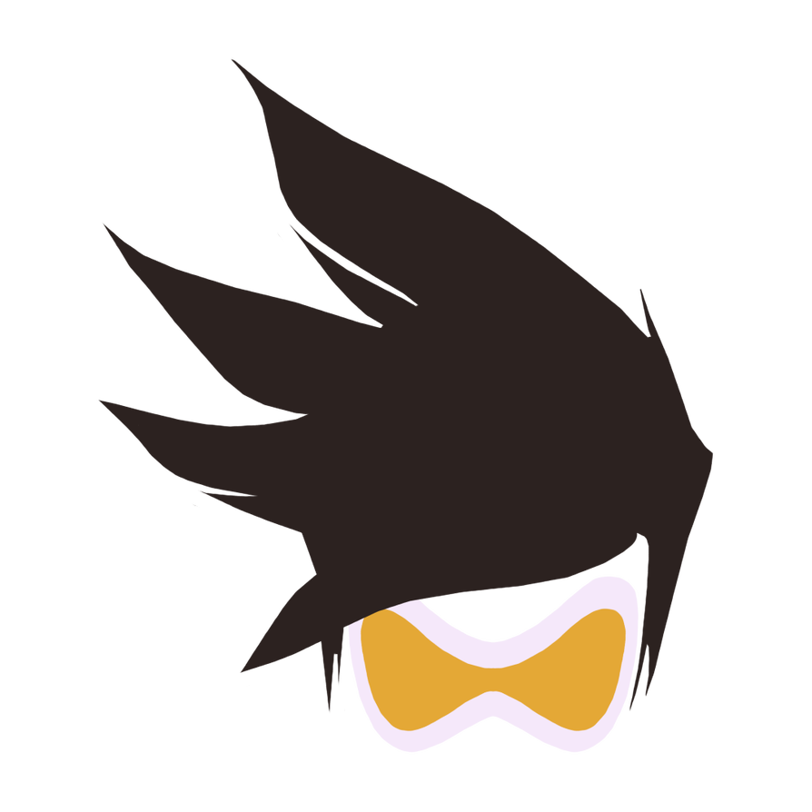
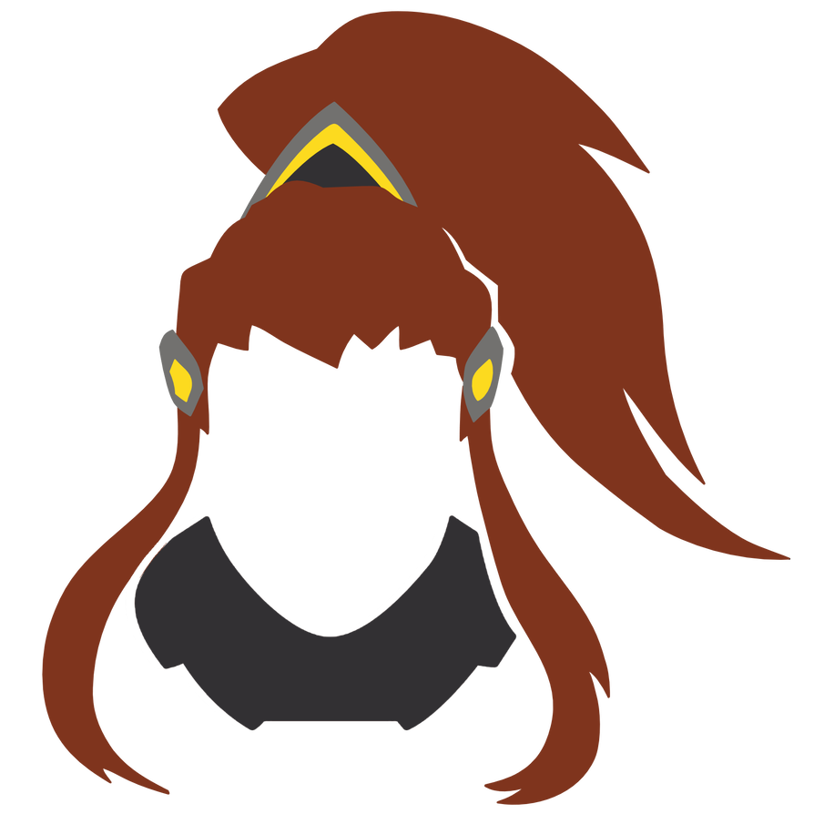

-
Tracer - A heroína veloz da Overwatch
Tracer, uma piloto britânica que se tornou uma das heroínas mais icônicas da Overwatch. Com sua habilidade única de manipular o tempo e se teletransportar, Tracer é uma peça chave para combater as ameaças globais que assolam o mundo.
"Não se preocupem queridos...a cavalaria chegou!"
Lena Oxton (Tracer)
Antes de se tornar Tracer, Lena trabalhou para a organização Overwatch como piloto de testes. Ela foi a primeira pessoa a testar o avançado avião-caça experimental "Chronal Accelerator", que lhe permitiu manipular o tempo e se teletransportar. Após um acidente que deixou seu dispositivo danificado, ela foi dada como morta. No entanto, sua habilidade de manipular o tempo a manteve presa em um loop temporal instável, tornando-a uma espécie de fantasma no tempo. Desde então, ela se juntou à Overwatch como uma heroína e tem sido uma peça chave para proteger o mundo contra ameaças globais.
-


JOHN WICK 4: BABA YAGA
Classificação: 16 anos
Duração: 2h49min
- SALA 3
20:30 - SALA 5
16:30 | 20:00
- SALA 3
-
SHAZAM! FÚRIA DOS DEUSES
Classificação: 12 anos
Duração: 2h10min
- SALA 5
14:00
- SALA 5
-
O EXORCISTA DO PAPA
Classificação: 16 anos
Duração: 1h43min
- SALA 1
22:00 - SALA 4
14:30 | 16:45 | 21:45
- SALA 1
-

Brigitte - A Escudeira de Combate
Conheça Brigitte Lindholm, a escudeira de combate da Overwatch. Filha do famoso engenheiro Torbjörn Lindholm, Brigitte cresceu rodeada de tecnologia e máquinas. Ela sempre sonhou em ser uma heroína como seus mentores, Reinhardt e sua madrinha, a lendária mercenária Ana Amari.
"Eu nunca fico pronta...mas eu estou sempre pronta para lutar!"
Brigitte Lindholm (Brigitte)
Como escudeira de combate, Brigitte é especialista em proteger seus aliados e incapacitar seus inimigos. Equipada com um martelo e um escudo, ela pode dar golpes poderosos e ao mesmo tempo proteger seus aliados de ataques inimigos. Sua habilidade especial, Barreira de Escudo, cria uma barreira de energia que bloqueia o dano e cura seus aliados atrás dela.
Além disso, Brigitte também é uma heroína muito versátil, capaz de curar seus aliados com seu Kit de Reparos e dar um impulso de velocidade com sua habilidade Corrida com Propulsor. Seu papel de suporte e tanque faz dela uma escolha popular entre os jogadores que buscam equilibrar a equipe com uma personagem versátil e resistente.
Com sua força, determinação e habilidades únicas, Brigitte Lindholm se tornou uma das heroínas mais adoradas da Overwatch.